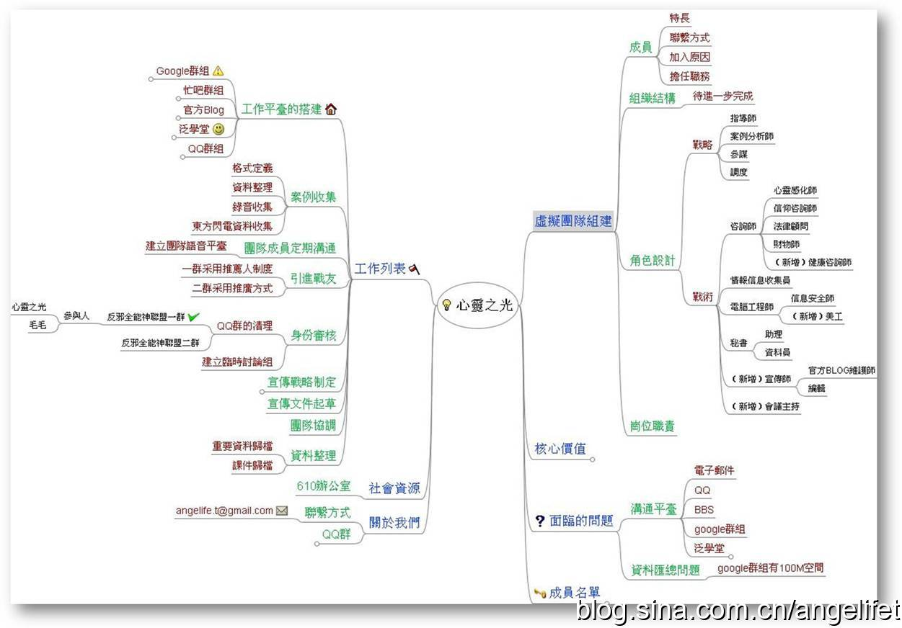

咨询简介
退教咨询计划
退教咨询计划（2009年）

咨询范围
-
邪教退教相关问题的解决
-
受害人家属的心理重建
咨询须知
-
请您清楚的描述你遇到的具体问题和家庭的几次主要矛盾冲突事件，注明事件的起因，与前后的变化。
-
用你所知道的基本特征说明：受害人和受害人家属的基本性格特点（包括信教前后的性格变化）;家庭经济水平，受教育程度。
-
说明目前主要和受害人联系的人群的特点。
咨询步骤
-
你要了解她的性格,以及她信教的外在因素,她本身有什么特别的需求.
-
要回溯当时的具体事件,要把其中的细节认真分析,找到问题的突破口.
-
对症下药.
自我评估
-
中医体质测试 http://www.huofar.com/ll_tizhi.php
-
MBTI测试
-
MBTI职业性格测试完整版: http://types.yuzeli.com/survey/mbti88/
-
MBTI-M人格类型量表： http://types.yuzeli.com/survey/MBTI/
-
凯尔西气质类型测试： http://types.yuzeli.com/survey/keirsey/
-
九型人格测试
-
九型人格测试（180题）http://types.yuzeli.com/survey/nine180/
-
心理健康指数测试
-
症状自评量表-SCL90:http://types.yuzeli.com/survey/scl90/
-
自创测试:扑克牌测试 http://1.angelife.sinaapp.com/?p=168
-
家庭问题测试
专家分析
专家根据受害者提供的信息和测试结果加以详细分析,掌握病情,提供解决思路
小组互助
成立受害者家属康复互助小组,彼此互相交流心得经验,加快恢复进程